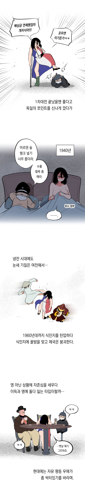

https://www.instagram.com/p/DaOx-b8j7TP/?vrfl=dHZicmN2MWt3bHQ4
원제:열강의 추억 - 도도한 눈새 프랑스
금요정

https://www.instagram.com/p/DaOx-b8j7TP/?vrfl=dHZicmN2MWt3bHQ4
원제:열강의 추억 - 도도한 눈새 프랑스
금요정

오 몽마르뜨 언덕보소
어허, 몽마르뜨 ‘둔덕‘

오 금요정
알자스와 로렌이 참 탐나내요
엘자스-로트링겐!
자유 평등 패배 가 아니었다고
오 비시정부
오
왜 영국은 여캐가 아닌거야
신사의 나라니까
19세기 프랑스 외교 참사의 원인은 무조건 나폴레옹 3세와 연결되어있자
어흐


금요정특 여캐 개꼴림
ㄹㅇ
초록 드립은 ㅋㅋㅋ
난 여기 오스트리아랑 덴마크가 좋드라
영길리 한결같은 추행질 ㅅㅂ ㅋㅋㅋㅋㅋㅋㅋㅋㅋㅋ
자유 평등 다음에 연대인데
일본에서 시작된 박애, 우애가 오역되서 이미 바꾸기엔 늦은거 같음
fraternité 뜻이 동지간의 협력, 계급간 갈등을 초월한 연합이란 뜻인데 이게 어케 박애 내지 우애로 번역됨 ㅋㅋ
어흐
생각보다 영국에 중립적 평가란 말이지.
초록은 ㅅㅂㅋㅋ
그는 만신이야
씹창난 외교는 프랑스의 전통이라기보단 나폴레옹 3세가 특별히 못한거긴한데 ㅋㅋㅋ
오..